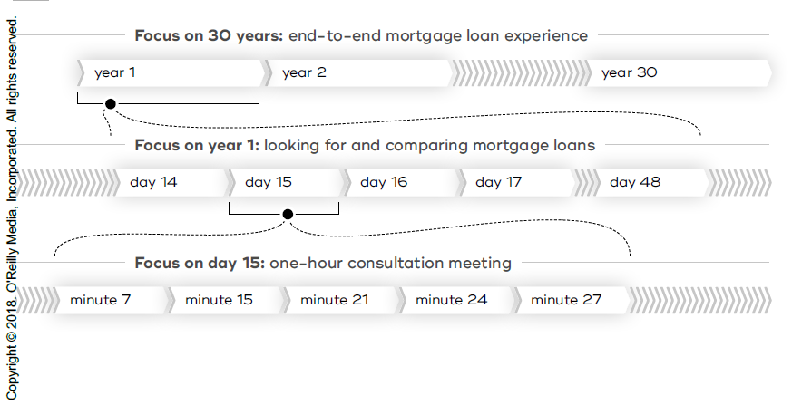
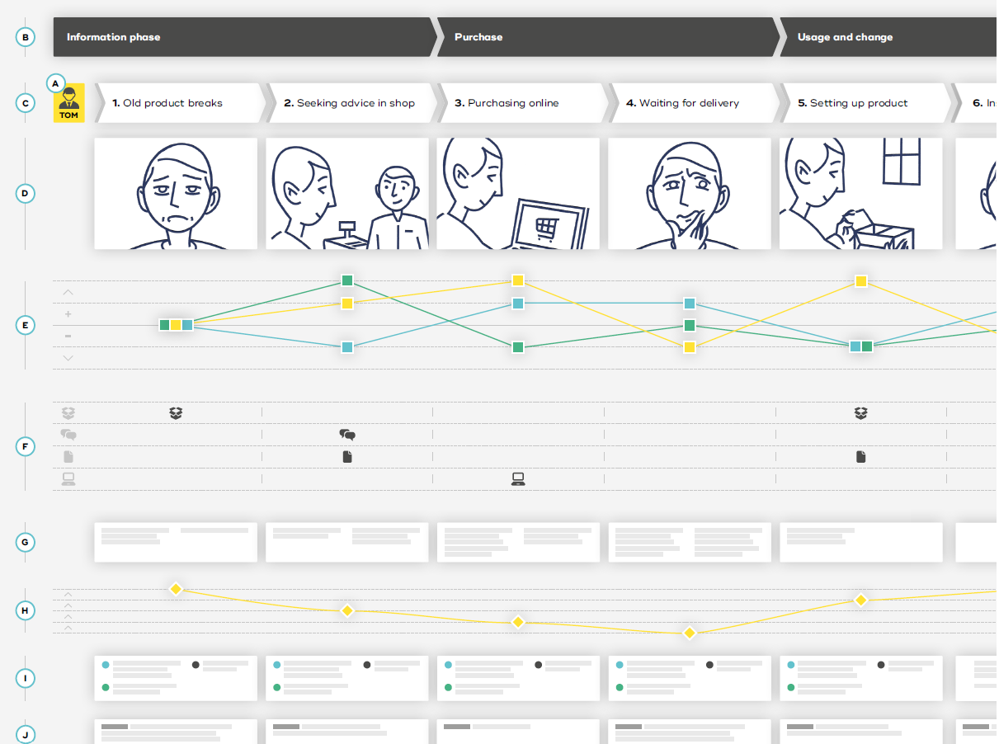
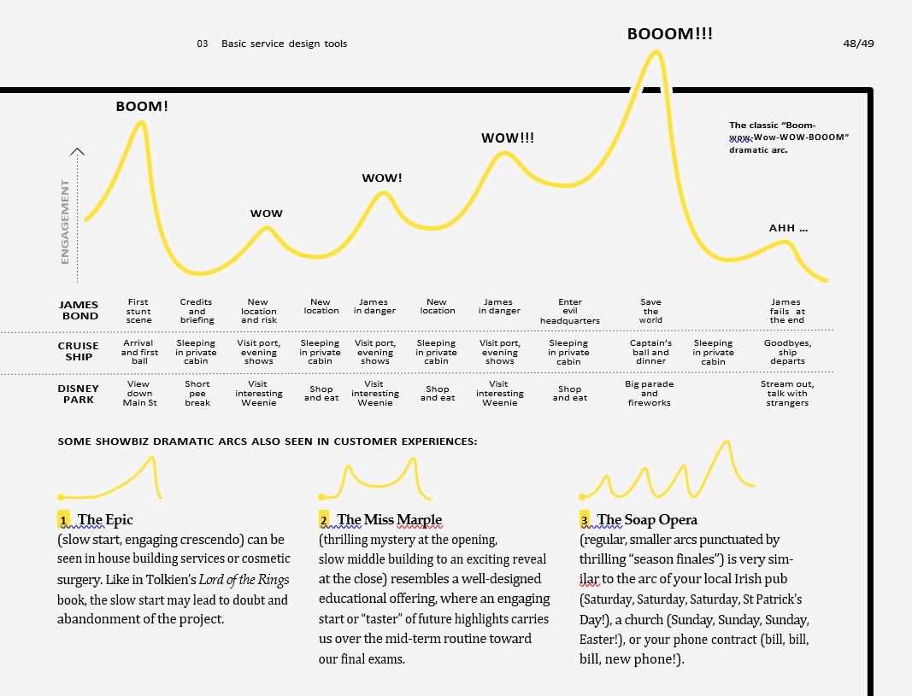

EXPERT TIP
“Journey maps are the most flexible tool we use with clients. We use them in three ways:
- To visually and transparently gather user stories when interviewing.
- To understand how existing services work and uncover pain points and opportunities for improvement.
- To envision future services.”
- Hazel White
A journey map visualizes the experience of a person overtime. For example, an end-to-end customer journey map can visualize the overall experience a customer has with a service, a physical or digital product, or a brand. This might include recognizing a need, searching for a specific service, booking and paying for it, and using the service, as well as maybe complaining if something goes wrong, or using the service again.
As a human-centered tool, journey maps not only in- clude steps where a customer is interacting with a company, but reveal all the key steps of an experience. Journey maps help us to find gaps in customer experiences and explore potential solutions. They can be used to visualize existing experiences as well as potential future experiences. Just as a movie is structured as a sequence of scenes, a journey map is structured as a sequence of steps (often also referred to as events, moments, experiences, interactions, activities, etc.).
Journey maps can have various scales and scopes, and you will usually need several to represent different aspects of one experience or service: from a high-level map showing an end-to-end experience, to more detailed maps focusing on one step of a higher-level journey, to very detailed step-by-step descriptions of micro-inter- actions. The idea of different scales applies to any map. For example, when you are driving your car across the country, you need a larger-scale map showing the main express routes between cities. But when you get to your destination you need a smaller-scale street map to find a particular street and building.
Different “zoom” levels of journey maps work just like this. A journey map can show 30 years of a mortgage-loan experience including searching for a house, signing contracts, living in the house, and making loan payments until the loan is paid off. Another one can zoom in even further and only illustrate a one-hour consultation meeting in detail. You can include different types of information in maps, depending on their purpose. When you compare different geographic maps, they might share some general information, but also contain very specific data. For example, street maps might highlight data you need to drive, nautical maps will contain information for sailing, or mining maps will show exact positions of mineral resources. You can find similar patterns in journey maps. They can contain specific information for different purposes, while sharing general data.
Journey maps make intangible experiences visible and facilitate a common understanding between team members. They are a way to visualize data in a simple and empathic way, but the quality of any map depends on the quality of the data it is based on. Journey maps make no attempt to represent the full complexity of a service offering with all its options, such as decision trees or “if/then” loops. Instead, a journey map shows one typ- ical or particularly interesting instance of a service. It forms a boundary object01 that allows diverse teams to work together efficiently and creatively with a customer’s experience as the common denominator. Journey maps can develop into living documents that evolve and change over several workshops and research loops and that bridge different departments and stakeholders in organizations.
A journey map always focuses on the experiences of one main actor, such as a group of customers or employees represented by a persona. Some journey maps also combine various perspectives in one map – for example, comparing different customer groups or comparing customer experiences with those of employees.
Stages represent the main phases of the main actor’s experience, such as, for example, the classic buyer de- cision process stages of “Problem/Need Recognition,” “Information Search,” “Evaluation of Alternatives,” “Purchase Decision,” and “Post-Purchase Behavior.” Stages help to structure a journey map and visualize its scale. Each stage normally contains several steps.
A journey map visualizes experiences as a sequence of steps from the perspective of the main actor. A step is any experience the main actor has, such as an interaction with another person, a machine, or a digital interface; but steps can also be activities, such as walking or waiting. The level of detail of each step depends on the overall scale of a journey map.
Storyboards visually represent each step through illustrations, photos, screenshots, or sketches to tell the story of specific situations, including their environment and context. A storyboard increases our empathy with a journey map and allows quicker navigation.
Emotional journeys are graphs representing the main actor’s level of satisfaction at each step, often on a scale from –2 (very negative) to +2 (very positive). An emo- tional journey visually reveals obvious problems within a specific experience.
Channels refer to any means of communication involved at a specific step, such as a face-to-face interaction, a website, an app, a TV advertisement, or a print adver- tisement. Specifying which channels the main actor is using helps us understand cross-channel experiences. A high-level map showing all possible channels pro- vides a comprehensive overview of alternative end- to-end journeys.
A list of stakeholders involved at each step of a journey map reveals which internal or external stakeholders are part of – or even responsible for – certain steps. This helps you to identify potential key actors that should be includ- ed in research, prototyping, and implementation.
A dramatic arc illustrates the level of the main actor’s engagement at each step – for example, from 1 (very low) to 5 (very high). Such arcs of tension are a common concept in storytelling used in theater, movies, and books; in service design these arcs are often used to reflect on the pace and rhythm of an experience.
Backstage processes connect frontstage experiences visu- alized as steps of the main actor with backstage processes that are often visualized as flowcharts. Backstage processes reveal which departments and systems are involved or triggered at specific steps. A journey map that includes backstage processes can provide the same information as a service blueprint. Often there are overlaps or hybrids of these two tools.
The “What if?” lane asks at every step, “What could possibly go wrong?” This helps to check if appropriate service recovery systems are in place. Important scenarios or problems that happen can then be visualized as separate journey maps.
The lane for jobs to be done (JTBD, sometimes also called user/customer jobs) describes what a particular service or product, whether physical or digital, helps the customer to achieve – either for the entire journey map or for specific steps of it. This helps to move away from the current solution and create a new frame to look for opportunities or to discover steps that do not provide value to a customer, but only exist due to the provider’s processes.
A conversion funnel visualizes conversion rates between relevant steps – for example, how many people enter a shop, how many take a look at a specific product, how many interact with staff, and how many actually buy it. Conversion analyses can be done for on- and of- fline journey maps. They reveal at which step the main actor leaves a certain process and prompt questions for further research into why the actor leaves at this specific moment.
Dramatic arcs (more usefully, “arcs of ten- sion”) are a well-known lens in the world of show business. They describe the sequence and rhythm of high and low engagement in a piece or performance. From Aristotle to Hollywood to dance club DJs, insiders know that the dramatic arc can make or break the experience.
But let’s talk services: considering the dramatic arc of a service journey can give us new insights into how it is experienced and why users might value or reject it. By marking moments of high and low engagement01 along a journey map, we can visualize the dramatic arc of an experience, and use it to understand the experience and focus our ideation.
The classic “boom-wow-Wow-WOW- BOOOM”02 arc of a Bond film (or rock concert) is strikingly similar to the arc of a commercial experience like an ocean cruise or a visit to a Disney park, as you can see in the figure. It is a great example of how successful arcs work, with a strong begin- ning (“Boom!”), rising engagement with breaks for breath (“wow!, Wow!, WOW!”), very strong crescendo (“BOOOM!!”), and a closing human moment (“Ah …”). In the wild, you will encounter many other arcs – the possible variations are infinite, and many work well while others flop.
Service experiences also have dramatic arcs which are often unique, but which can benefit from analysis and variation even if they do not fit a common pattern. It’s important to remember that high engage- ment does not only come at exciting, loud, or “flashy” moments. A very quiet moment can be highly engaging too, if it is very relevant to the customer (or audience). Crucially, a high point on the dramatic arc is not necessarily “good” and a low point is not necessarily “bad.” The height of the dramatic arc represents engagement, not satisfaction.
We might think of a high value as “thrill” and a low value as “chill.” Both have their place – it is the interplay which makes the difference.
Try adding a visualization of the dramatic arc to your journey map. Is it overloaded? Frontloaded? Are early prom- ises fulfilled? Are the periods of low or high engagement too long? Must a highlight be added, or – this is often more practical – should a less engaging step be spotlighted to increase engagement and show value more clearly? Compare the arc with a visualization of the emotional journey. If a moment is unsatisfying (a low dip on the emotional journey) and also highly engag- ing (a high peak on the dramatic arc), this is especially dangerous. For example, it’s an- noying if a waiter spills soup on you at the diner (low satisfaction, low engagement). But if a waiter spills soup on your dress on your wedding day (low satisfaction, very high engagement), it’s a catastrophe. Ideally, your most pleasing experiences will be at moments of high engagement.
Qualitative research data – such as quotes from cus- tomers or employees, observations from researchers, or videos, photos, and screenshots – enriches a journey map and improves its credibility.
Quantitative data such as statistics and metrics of, for example, satisfaction surveys for specific steps or channels can improve the reliability of a journey map and substantiate qualitative research data.
Further lanes can be added to visualize project-specific content; for example, key performance indicators (KPIs), references to other journey maps or documents (files, links, etc.), responsibilities, or indicators of reliability (assumption-based vs. research-based).